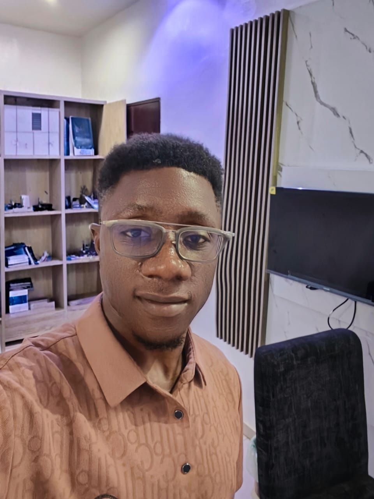

Good day, everyone. My name is Henry Eric from Nigeria. I am passionate about agriculture, technology, and programming. I enjoy learning new skills, solving problems, and creating meaningful opportunities through continuous growth.